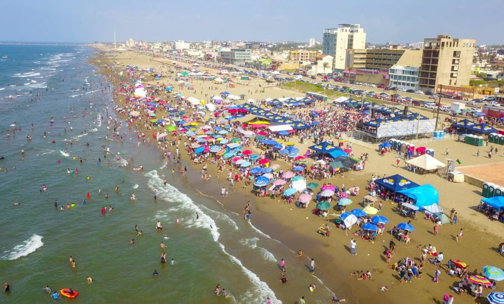

Joshua David Sanchez Maza
Estudiante de Ing. Sistemas Computacionales
Lugar de Nacimiento
Coatzacoalcos es una ciudad ubicada en el estado de Veracruz, en México. Esta ciudad se encuentra en la costa del Golfo de México y es conocida por su importancia en la industria petrolera y petroquímica. Coatzacoalcos es un importante puerto marítimo y un centro industrial en la región, lo que le otorga una relevancia económica significativa.

Es un lugar de gran diversidad étnica y cultural, y cuenta con una rica tradición gastronómica y artística.
Su clima tropical y hermosas playas también atraen a turistas que buscan disfrutar del sol y el mar.

Descripción de porque decidiste estudiar Sistemas Computacionales
Elegi estudiar Sistemas Computacionales por una variedad de razones, incluido el interés personal, las oportunidades profesionales y la posibilidad de tener un impacto en el mundo a través de la tecnología.

Menciona las expectativas que tienes del curso.
Crear sitios web funcionales, conocer el funcionamiento de la web y diseñar interfaces atractivas
Enlace a pagina web sobre Editores de Paginas.
Coppola, M. (2023, 16 mayo). Los 14 mejores editores web para HTML. hubspot. https://blog.hubspot.es/website/mejores-editores-html